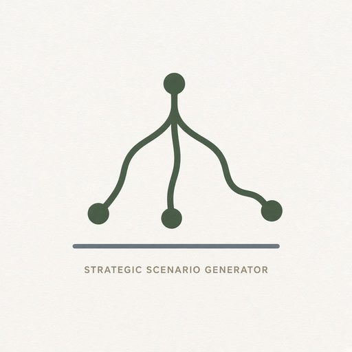

Phyllux apps hub
18. Business and strategy
11 modules in this Suite family. Soft launch lists the map; depth grows as Suite modules ship.
168. Quantum StrategyBusiness strategy under uncertainty.
169. Adaptive Strategy EngineStrategies that change as circumstances change.
170. Business Uncertainty DashboardMarket, customers, tech, regulation, cash flow.
171. Organizational Relationship MapPeople, teams, customers, suppliers, dependencies.
172. Corporate Value EvolutionChanging organizational values.
173. Strategic Assumption TrackerAssumptions under a strategy.

174. Strategic Scenario GeneratorAlternative futures.175. Innovation Emergence TrackerIdeas that arise unexpectedly.
176. Organizational Meme TrackerIdeas propagating through a company.
177. Corporate Knowledge GraphRelational knowledge management for orgs.
178. Decision AuditWhy decisions were made and how assumptions evolved.